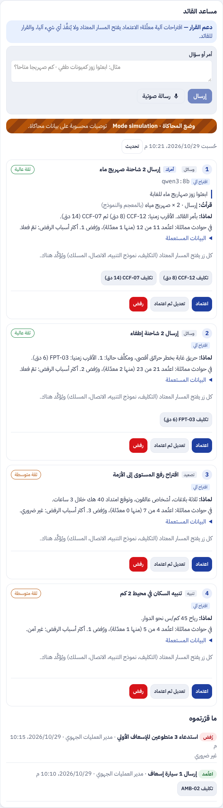
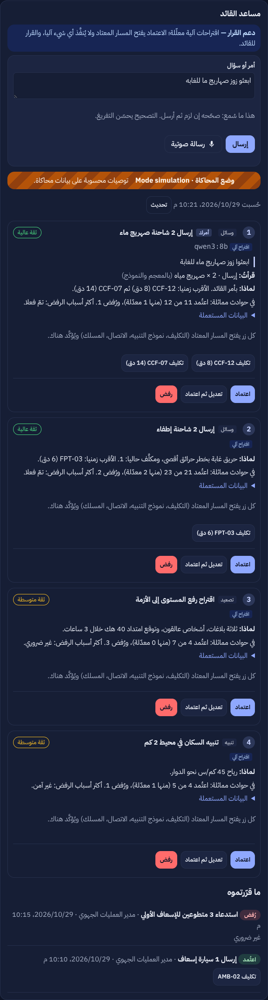
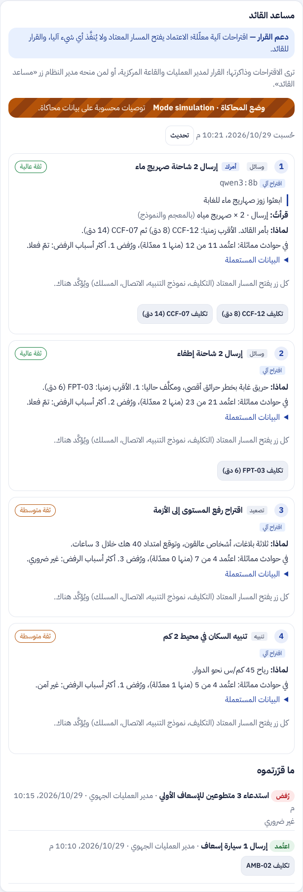
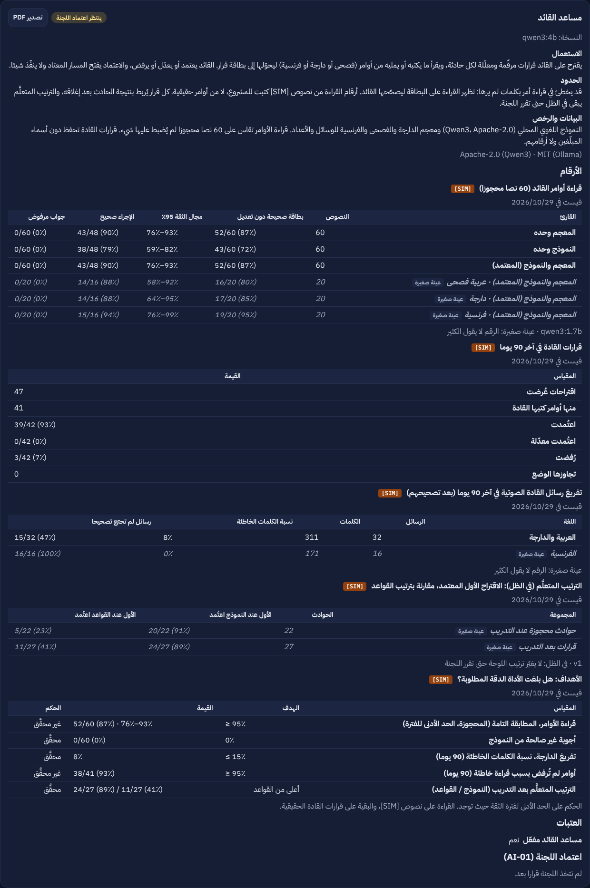
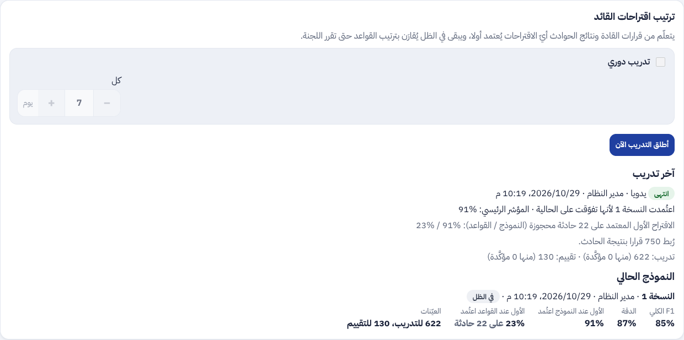

تقرير المرحلة AI5: مساعد القائد، أداة ذكاء اصطناعي مفتوحة المصدر تعمل محليا وتتعلم من القرارات. لوحة القائد والأوامر المكتوبة (AI5a)، الرسالة الصوتية وحصر القرار في القائد (AI5b)، التعلم من القرارات ونتائجها في الظل وجدول الأهداف (AI5c)؛ ومعها مركز التدريب الذاتي من البلاغات
التاريخ2026-10-29
الفرعclaude/project-thread-y7ctrf
الحالةالكود مدموج (#136 و #138 و #139 و #140)؛ وثائق نهاية المرحلة بانتظار الدمج
اتخاذ القرار: القائد يرى في صفحة الحادث اقتراحات مرقّمة بتعليلها، ويكتب أمرا أو يمليه، ثم يعتمد أو يعدّل أو يرفض بسبب. الذكاء الاصطناعي يقترح ولا ينفّذ (AI-01، BR-21).
التحليل والتنبؤ: كل قرار يُربط بنتيجة حادثه بعد الإغلاق، فيتعلم منه مرتِّب يُقارَن بترتيب القواعد ويبقى في الظل.
المعالجة: البلاغات المغلقة تصبح عيّنات مجهَّلة مشفّرة لمركز التدريب، وتأكيد المشغّل يزن أكثر.
2. مراجعة ← تصميم ← تطوير
الطلب: قال يامن: «أداة ذكاء اصطناعي مفتوحة المصدر تعمل في بيئة محلية، جاهزة للتعلم من البلاغات والقرارات المتخذة والموارد المادية والبشرية والجاهزية، توضع على ذمة القيادة. يُدخل القائد نصا، أو يعتمد القرارات المولّدة، أو يضغط على زر لإدخال رسالة صوتية». ووافق على المراحل الثلاث «على شرط أن تصل الأداة إلى أداة عالية الدقة من خلال التدريب والتعلم». ثم حدّد القائد: «احذف زر المساعد القائد للجنة الجهوية ولكن امنحه لمدير النظام وهو سيقرر بعد ذلك لمن يمنحه»، وأكّد توفر خادم GPU.
الأمن والخصوصية: كل شيء محلي (Ollama و Qwen3، faster-whisper، scikit-learn)، لا خدمة سحابية. نص القائد يُحاط بوسم لا يخرج منه ويُقرأ بجواب JSON مقيّد بمخطط. الصوت يُحذف فور التفريغ نجح أو فشل، والتفريغ والتصحيح مشفّران. لا أسماء ولا هواتف ولا كلام المواطنين فيما تتعلم منه الأداة، والعيّنات مجهَّلة ومشفّرة ويقرؤها مدير الذكاء الاصطناعي وحده. القرار تحت أمان أسطر الحادث نفسه، وكل قرار في السجل والخط الزمني. النماذج المتعلَّمة أرقام عادية بلا pickle.
AI5a: لوحة القائد وذاكرة القرارات والأوامر المكتوبة (#136)
ذاكرة القرارات (الترحيل 0077): سطر لكل اقتراح عُرض، بأصله وصورة الحالة المجهولة وحالته وسببه ومن قرر.
اللوحة: الاقتراحات مرقّمة، أوامر القائد أولا، وسطر «ما فعله القادة» في حوادث مشابهة (أعداد وطنية دون أسماء).
قراءة الأمر: المعجم أولا ثم النموذج المحلي لما لم يجد فيه فعلا؛ القراءة تحت البطاقة قبل أي اعتماد.
البلاغ المغلق أو المرفوض عيّنة مجهَّلة مشفّرة (الترحيل 0076)، والتقسيم ثابت حسب الحادثة.
تدريبات الصنف والأرواح في خطر والرفض والكلمات الجديدة والحرائق والدخان، يطلقها مدير المنظومة أو يبرمجها، كلها موقوفة افتراضيا.
نسخة جديدة لا تُعتمد إلا إن تفوّقت على الحالية، وتبقى في الظل.
AI5b: الرسالة الصوتية، والقائد وحده يقرر (#139)
زر الميكروفون حتى 60 ثانية، تفريغ محلي بموجّه فيه كلمات الأوامر (الترحيل 0078)، والنص في الصندوق ليصحّحه القائد.
القائد: مدير العمليات الجهوي وقاعة العمليات المركزية؛ غيرهما يرى اللوحة للاطلاع؛ الزر incidents.commander يمنحه مدير المنظومة.
عدد الكلمات الخاطئة بين التفريغ والتصحيح يُقاس لكل لغة على 90 يوما.
AI5c: التعلم من القرارات ونتائجها (#140)
النتيجة: الدقائق حتى الإغلاق، ونتيجة التقييم، والتكليفات بعد القرار، والتصعيد، وهل أُرسلت الوسيلة نفسها لاحقا.
المرتِّب: انحدار لوجستي على الاقتراح وصورة الحالة، يُقاس بـ«الاقتراح الأول المعتمد» مقارنة بالقواعد على حوادث محجوزة، ثم على قرارات بعد التدريب.
عيّنات الأوامر (source = 'order') بقراءتها وحكم القائد: مادة التدريب الدقيق لاحقا (AI5d).
جدول الأهداف في بطاقة نموذج مساعد القائد، بحكم كل هدف: محقَّق، غير محقَّق، لم يُقَس بعد.
3. لقطات مرجعية [SIM]
لقطات اللوحة كما هي في نهاية المرحلة، نهارا وليلا، بالعربية، قاعدةً مرجعية لما يأتي بعدها. المعطيات في اللقطات محاكاة.

لوحة القائد: اقتراحات مرقّمة وأمر مكتوب وقراءته، و«ما قرّرتموه»، نهارا

الرسالة الصوتية: التسجيل ثم النص للتصحيح قبل الإرسال، ليلا

اللوحة للاطلاع فقط لمن ليس قائدا (اللجنة الجهوية مثلا)، نهارا

بطاقة نموذج مساعد القائد: الأهداف وحكمها، والترتيب المتعلَّم مقارنة بالقواعد، ليلا

مركز التدريب: ترتيب القائد المتعلَّم والاقتراح الأول المعتمد، نهارا
4. التقدم لكل جزء
البند
الحالة
التقدم
F-DSH-97 و 98 لوحة القائد والأوامر المكتوبة
منجز (AI5a)
F-DSH-99 و 100 الرسالة الصوتية ومن هو القائد
منجز (AI5b)
F-DSH-101 مركز التدريب وبطاقة النموذج بالأهداف
منجز (#138 و AI5c)
F-SRV-41 إلى F-SRV-44
منجز
هدف قراءة الأوامر ≥ 95٪
86.7٪ بالمعجم على المحجوزة؛ يُقاس بـ Qwen3 8B على خادم GPU
هدف الكلمات الخاطئة في الصوت ≤ 15٪
لم يُقَس بعد: يحتاج رسائل حقيقية مصحَّحة
إخراج المرتِّب من الظل (AI-03)
بقرار اللجنة على قرارات حقيقية
AI5d التدريب الدقيق LoRA
مؤجّل حتى بضعة آلاف من القرارات المصحَّحة
تقدم المرحلة AI5: 100% من البناء. الدقة العالية التي اشترطها يامن تُبلغ بالتعلم من الاستعمال الحقيقي، وكل رقم يُقاس على معطيات لم يُضبط عليها.
5. المحاكاة [SIM]
[SIM] الحوادث والاقتراحات والقرارات والأوامر في اللقطات مختلَقة للعرض.
[SIM] مجموعتا تقييم الأوامر (120 نصا) كتبها الفريق؛ الأرقام حقيقية لكن على نصوص محاكاة.
[SIM] اختبار المرتِّب يولّد 150 حادثا بقادة محاكين يتبعون قاعدة خفية لا يعرفها ترتيب القواعد، فيبيّن أن المرتِّب يتعلمها ويتفوق على القواعد؛ لا يقول شيئا عن قادة حقيقيين.
لا قرار حقيقي بعد: المرتِّب في الظل، وجدول الأهداف يقول «لم يُقَس» حيث لا معطيات.
6. الاختبارات المطبقة
المكوّن
العدد
النتيجة
الخلفية (pytest)
1113، منها ذاكرة القرارات وقيودها، قراءة الأوامر، الصوت وحذفه، القائد وحده، النتائج، المرتِّب، عيّنات الأوامر، مركز التدريب
ناجحة في CI
الترحيلات
صعودا ونزولا ثم صعودا حتى 0078
ناجحة
لوحة القيادة (vitest)
611، منها لوحة القائد والصوت والاطلاع ومركز التدريب
الصوت: test_voice_message_corrected_then_sent و test_voice_message_refusals يتحققان من حذف الصوت من المخزن بعد التفريغ، ومن التصحيح قبل الإرسال وحدود الحجم.
القائد وحده: اللجنة الجهوية ومن لا يملك الزر يحصلون على 403 عند الكتابة أو القرار، ويرون اللوحة للاطلاع.
التعلم: test_command_learning (6 اختبارات): الربط بعد الإغلاق وإعادته عند إعادة الفتح، التسمية، المرتِّب في الظل مقارنة بالقواعد، والحد الأدنى للعيّنات.
نماذج مركز التدريب ومرتِّب القائد، معاملات صريحة بلا pickle
الرخصة
BSD-3-Clause
الواجهة البرمجية
563 مسارا · 678 عملية · 2
الجديد
/staff/incidents/{id}/command و .../command/voice و /staff/command/decisions/{id} و /staff/learning/* و /staff/reports/{id}/learning-label
الأيقونات
37 أيقونة في الويب · 4
الجديد
mic و stop للرسالة الصوتية
8. المخرجات المحيَّنة
الملف الوصفي V26 (docx و pdf) في spec/: F-DSH-97 إلى 101، F-SRV-41 إلى 44، القاعدة BR-21، قرارات AI5، القرار المنتظر AI-03، 563 مسارا و678 عملية، 33 مخططا و202 جدولا و78 ترحيلا، الاختبارات، وخارطة الطريق؛ و V25 محفوظ.
مخططات UML في diagrams/: صنف مساعد القائد والتعلم (2b)، وثلاثة تسلسلات (77 الأمر والقرار، 78 الصوت، 79 التعلم في الظل)، وحالات الاقتراح (7a)، وحالات الاستعمال S70 إلى S76.
العرض للمسؤولين في presentation/: 48 مرحلة، مساعد القائد، الاختبارات، دقة قراءة الأوامر، وخارطة الطريق.
سجل الإصدارات، دليلا التنصيب (الترحيلات 0076 إلى 0078، إعادة بناء خدمة الذكاء) ونسخهما في guide/، واللقطات المرجعية في phase-ai5/.
9. ملاحظات وانحرافات
الدمج الأول «النموذج يقرر» أنقص القراءات التامة في CI (78.3٪ على المحجوزة)، فصار «المعجم أولا» على أساس مجموعة التطوير وحدها: لا يقرأ أسوأ من المعجم فيما يعرفه المعجم.
المرتِّب يعمل في الظل فقط؛ لا يغيّر ترتيب اللوحة حتى قرار اللجنة (AI-03).
إصلاحان ظهرا في لقطات نهاية المرحلة: لوحة القائد كانت تحمل الصنف commander الذي يستعمله المحور لتخطيط أفقي، فطفا عنوان «ما قرّرتموه» بجانب البطاقات وصغر خطه، وصار الصنف commander-panel؛ وجدول الأهداف صار يكتب الهدف بالنسبة المئوية حسب اللغة (≥ 95٪، ≤ 15٪).
اختباران في CI على #140 تعثّرا مرة ثم نجحا (test_learning و test_cross_border)، ونجحا على قاعدة جديدة محليا.
بند في الميثاق عن استعمال النصوص المجهولة لتحسين الأداة (القانون 2004-63) يُطرح خطوة مستقلة، لأن تغيير الميثاق يفرض إعادة القبول.
10. ما يلي
دمج هذا التحيين. ثم، حين يتوفر خادم GPU: قياس قراءة الأوامر بـ Qwen3 8B وتفريغ الصوت بنموذج أكبر، وتشغيل التدريبات المبرمجة على البلاغات الحقيقية؛ وقرار اللجنة في المرتِّب (AI-03) والتدريب الدقيق AI5d حين تتجمع القرارات الحقيقية.